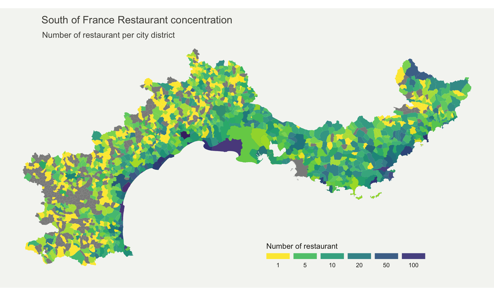

Choropleth map
definition - mistake - related - code
A choropleth map displays divided geographical areas or regions that are coloured in relation to a numeric variable. It allows to study how a variable evolutes along a territory. It is a powerful and widely used data visualization technique. However, its downside is that regions with bigger sizes tend to have a bigger weight in the map interpretation, which includes a bias.
Here is an example describing the distribution of restaurants in the south of france.
# Libraries
library(maptools)
library(cartogram)
library(tidyverse)
library(broom)
library(viridis)
library(patchwork)
library(geojsonio)
# Import region boundaries
spdf <- geojson_read("https://raw.githubusercontent.com/gregoiredavid/france-geojson/master/communes.geojson", what = "sp")
# Since it is a bit to much data, I select only a subset of it:
spdf = spdf[ substr(spdf@data$code,1,2) %in% c("06", "83", "13", "30", "34", "11", "66") , ]
# I need to fortify the data AND keep trace of the commune code! (Takes 2 minutes)
library(broom)
spdf_fortified <- tidy(spdf, region = "code")
# read data
data=read.table("https://www.r-graph-gallery.com/wp-content/uploads/2017/12/data_on_french_states.csv", header=T, sep=";")
# Make the merge
spdf_fortified = spdf_fortified %>%
left_join(. , data, by=c("id"="depcom"))
# Note that if the number of restaurant is NA, it is in fact 0
spdf_fortified$nb_equip[ is.na(spdf_fortified$nb_equip)] = NA
# Plot
p <- ggplot() +
geom_polygon(data = spdf_fortified, aes(fill = nb_equip, x = long, y = lat, group = group) , size=0, alpha=0.9) +
theme_void() +
scale_fill_viridis(direction=-1, trans = "log", breaks=c(1,5,10,20,50,100), name="Number of restaurant", guide = guide_legend( keyheight = unit(3, units = "mm"), keywidth=unit(12, units = "mm"), label.position = "bottom", title.position = 'top', nrow=1) ) +
labs(
title = "South of France Restaurant concentration",
subtitle = "Number of restaurant per city district",
caption = "Data: INSEE | Creation: Yan Holtz | r-graph-gallery.com"
) +
theme(
text = element_text(color = "#22211d"),
plot.background = element_rect(fill = "#f5f5f2", color = NA),
panel.background = element_rect(fill = "#f5f5f2", color = NA),
legend.background = element_rect(fill = "#f5f5f2", color = NA),
plot.title = element_text(size= 15, hjust=0.01, color = "#4e4d47", margin = margin(b = -0.1, t = 0.4, l = 2, unit = "cm")),
plot.subtitle = element_text(size= 12, hjust=0.01, color = "#4e4d47", margin = margin(b = -0.1, t = 0.43, l = 2, unit = "cm")),
plot.caption = element_text( size=8, color = "#4e4d47", margin = margin(b = 0.3, r=-99, unit = "cm") ),
legend.position = c(0.7, 0.09)
) +
coord_map()
p
Note: Boundaries of city districts come from here. Number of restaurant per district comes from here.
Important Note: Here, the absolute number of restaurant per district is shown. Keep in mind that an important bias is present: districts with large area and / or high number of inhabitants are more prone to have a lot of restaurants.
The R and Python graph galleries are 2 websites providing hundreds of chart example, always providing the reproducible code. Click the button below to see how to build the chart you need with your favorite programing language.
R graph gallery Python gallery
Any thoughts on this? Found any mistake? Disagree? Please drop me a word on twitter or in the comment section below:
A work by Yan Holtz for data-to-viz.com